課後複習首頁第 3 次｜社會與道德發展
社會與道德發展：生態系統、心理社會與道德推理
上次的 Piaget 與 Vygotsky 著重個體的認知發展；這次轉向個體所處的社會脈絡，以及人格、道德與社會情緒的發展。內容依序為：Bronfenbrenner 的生態系統論；Erikson 的心理社會發展論，以及 Marcia 對青少年自我認同的補充；道德發展方面，從 Piaget 的「他律到自律」，到 Kohlberg 的三期六段論，再到 Gilligan 的關懷倫理；最後依學前、小學、中學三個階段，整理社會關係、自我概念與自尊的發展。
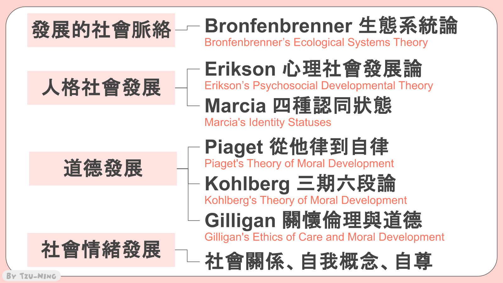
Bronfenbrenner 的生態系統論
布隆芬布連納（Urie Bronfenbrenner，1917–2005）生於俄羅斯，幼年移居美國，是美國發展心理學家。他於 1938 年取得康乃爾大學學士學位（心理學與音樂雙主修），1940 年取得哈佛大學教育學碩士，1942 年取得密西根大學發展心理學博士，之後長期任教於康乃爾大學，也是美國 Head Start（啟蒙計畫）的共同創辦人。他提出的生態系統理論（ecological systems theory），其理論圖由內而外一圈套著一圈，常被比喻像是俄羅斯娃娃。
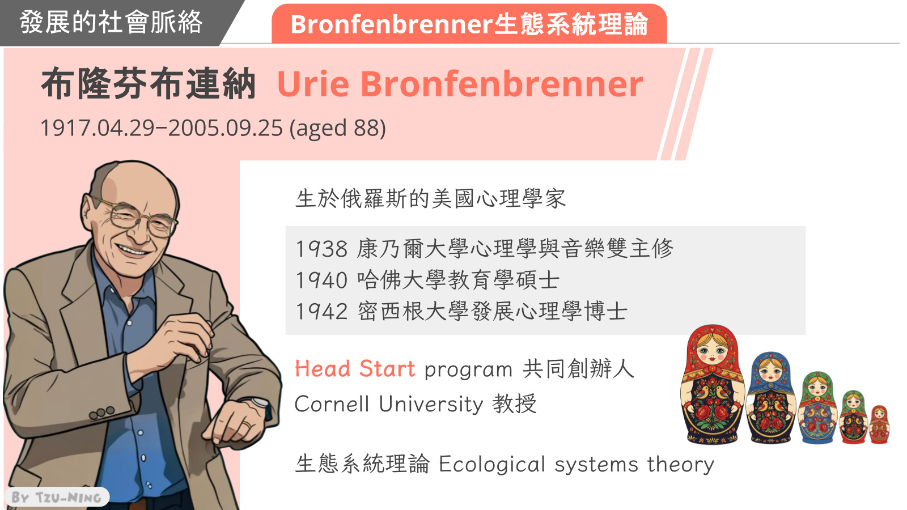
Bronfenbrenner 批評當時的心理學是在「研究兒童在陌生情境中與陌生大人在極短時間內的奇怪行為」：把兒童帶進陌生的實驗室，由不認識的研究者要求他們完成各種任務。他並非反對實驗，而是認為不能只看實驗；兒童在實驗室中的表現，可能與他在家庭、社區、學校與班級中的表現不同，研究應把兒童放回原本的生長環境來理解，也就是重視生態效度（ecological validity）。
生態系統理論認為，圍繞兒童的各個系統並非孤立，而是相互依存，一個系統的變動會連鎖影響其他系統。
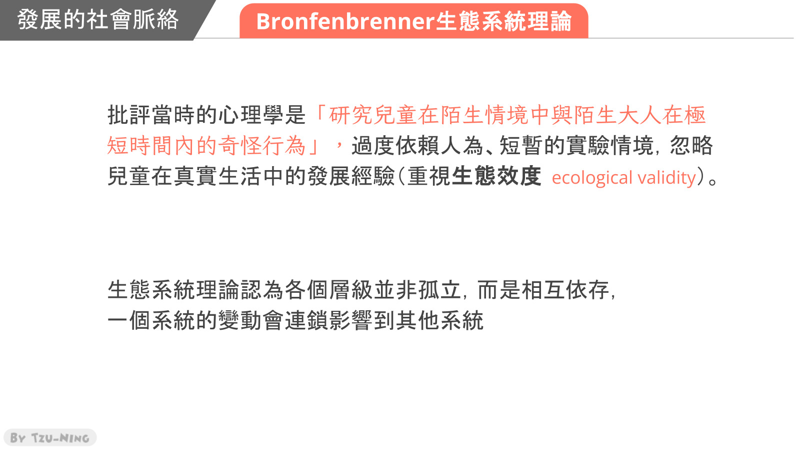
五個系統
- 微系統（microsystem）：個體直接參與的日常情境，及其中的人際互動，例如家庭、班級與同儕。
- 中介系統（mesosystem，又稱中系統）：個體所處不同微系統之間的連結，例如家庭與學校的溝通。家庭與班級都是兒童直接參與的微系統，其中包含與父母、教師、同儕的活動及人際互動。親師溝通則連結家庭與學校兩個生活情境，屬於中介系統的例子。可以把 meso 聯想成「味噌」（miso）：家長與老師坐下來邊喝味噌湯、邊談孩子。
- 外系統（exosystem）：兒童未直接參與，但會影響其日常生活的情境，例如照顧者的工作制度：父母的職場要求接下來一個月都要加班，兒童雖未參與父母的工作，生活安排卻因此受到影響。
- 大系統（macrosystem，又稱巨系統）：文化中的價值、法律、制度與資源分配，形塑各層系統的運作。大系統是包圍所有系統的「隱形框架」，是抽象、宏觀的，例如社會崇尚「升學至上」還是「多元發展」、國家的性別平等法、稅制或社會福利等經濟制度，以及貧富差距等社會階級的現狀。
- 時間系統（chronosystem）：時間系統是 Bronfenbrenner 後來補充的概念，強調個人與環境隨時間的變化，包括生命歷程中的重要轉變與社會歷史事件，以及這些變化如何影響個體發展。例如，COVID-19 疫情期間，有些學生長時間無法與同班同學實體見面，學校也轉為遠距教學。這段經歷不僅影響了當時的學習與人際互動，也可能持續影響後續的教學方式，以及人們對線上學習的看法。
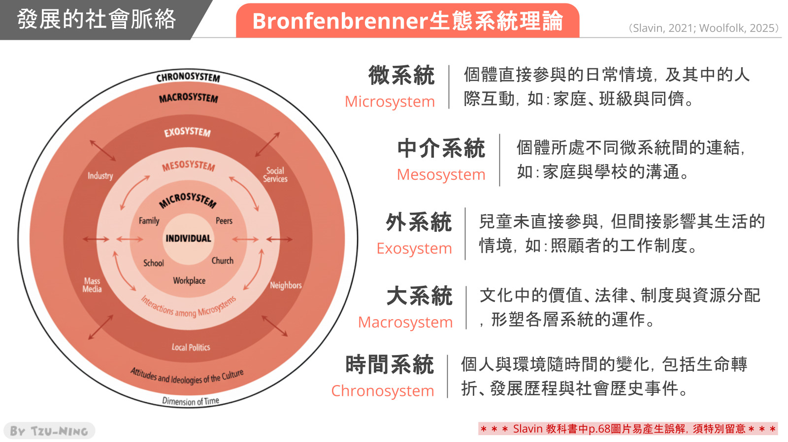
學習這個理論的關鍵，在於能根據情境描述的重點，判斷與哪一個系統較有關。例如：家庭對兒童的直接影響屬於微系統；父母與老師的交流屬於中系統；父母的工作壓力屬於外系統；一個社會的教育價值觀、文化信念與法律制度則屬於大系統。需要留意的是，同一事件可能同時涉及不同系統，關鍵在於描述強調的是哪個面向。例如，「國家發生重大經濟危機」可能涉及大系統的經濟環境；但如果描述的重點是孩子在成長過程中經歷經濟危機，家庭生活與教育環境隨時間改變，並影響其後續發展，則更能凸顯時間系統的概念。因此，判斷時間系統的關鍵，不只是影響持續多久，而是是否涉及生命歷程、歷史事件，以及個人與環境隨時間的變化。
Erikson 其人：「我是誰？」
艾瑞克森（Erik Erikson，1902–1994）是德裔美籍心理學家，提出心理社會發展論（psychosocial developmental theory）。許多學者的理論帶有自身成長經驗的影子，Erikson 也是如此：他一生追問的核心問題是「我是誰？」，這與他的身世密切相關。
Erikson 一生換過三個姓。他的母親出身丹麥的猶太望族，懷孕時已與丈夫分居，後來在德國法蘭克福生下他，他因此冠上母親丈夫的姓，名為 Erik Salomonsen；他的生父是誰則始終不明。之後母親改嫁，繼父 Theodor Homburger 收養了他，他改名為 Erik Homburger。母親與繼父都是猶太人，Erikson 卻是金髮碧眼：在學校，同學因他的猶太姓氏而排斥他；在猶太會堂，又有人因他的外表而不把他當成猶太人。在不同群體中都受到排斥，使他從小就對「我是誰」充滿疑惑。
Erikson 起初學的是藝術，年輕時在歐洲各地遊歷作畫，後來到維也納一所學校教藝術。學校與精神分析學者安娜・佛洛伊德（Anna Freud）——西格蒙德・佛洛伊德（Sigmund Freud）的女兒——關係密切；她看出 Erikson 對兒童的觀察與描述相當精闢，引導他進入兒童精神分析的領域。因此 Erikson 的理論受到 Sigmund Freud 與 Anna Freud 的影響，屬於新精神分析學派。移居美國、申請入籍時，他為自己取了新的姓氏 Erikson，「Erik Erikson」常被解讀為「艾瑞克是艾瑞克自己的兒子」，象徵他已找到自己。
Erikson 沒有學士學位，卻曾任教於哈佛大學、耶魯大學與加州大學柏克萊分校。1950 年，他出版了《童年與社會》（Childhood and Society）。
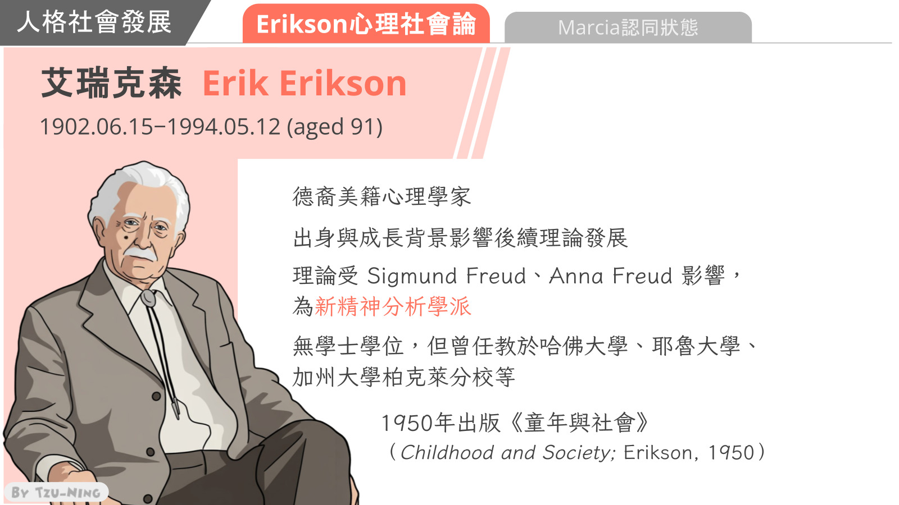
Erikson 的八個心理社會階段
Erikson 將一生的發展分為八個心理社會階段，各階段都有待處理的心理社會危機（psychosocial crisis）。發展的重點在於整合正負兩種傾向，使正向特質占有適當優勢，同時保有適度的負向敏感度。因此，不能只以「發展順利」或「發展障礙」把一個人固定歸類；早期經驗會影響後續發展，早期議題也可能在往後再次浮現。
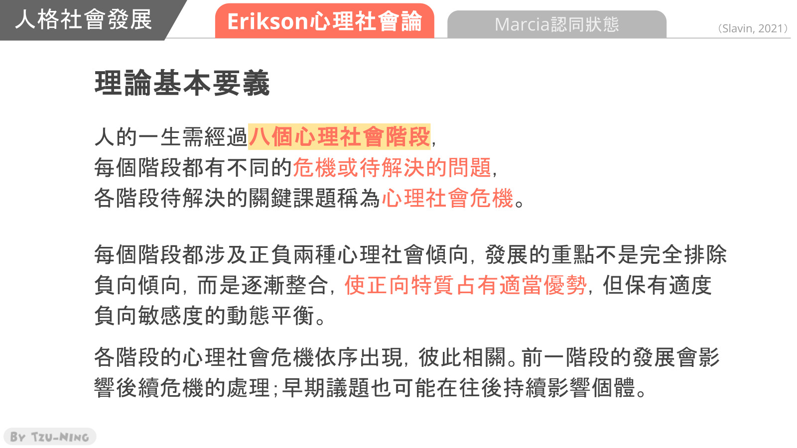
1. 信任 vs. 不信任（出生–18 個月）
嬰兒需要依靠主要照顧者滿足飲食、清潔、休息與情感上的需要。當需要能持續獲得回應，嬰兒便逐漸形成基本信任（trust）：感受到照顧者與周遭世界大致可靠，自己有需要時可以獲得照顧。若照顧方式經常改變，或需要長期未獲回應，則可能增加不安與不信任感。
在日常照顧中，成人可以留意嬰兒哭泣時的表情、動作與生活節奏，嘗試辨識是否飢餓、尿布濕了或需要休息，並以靠近、安撫與陪伴回應。即使一時無法確定原因，持續觀察與調整仍有助於嬰兒慢慢安定下來。早期照顧經驗會影響後續發展，但不代表結果必然固定。
關鍵重點：穩定、敏感地回應需要，讓嬰兒逐漸感受到他人與環境是可以依靠的。
2. 獨立自主 vs. 羞愧懷疑（18 個月–3 歲）
幼兒逐漸希望能自己控制行動、做出選擇，獨立自主（autonomy）也在這些嘗試中發展。日常生活中，幼兒可能堅持自己吃飯、穿衣或穿鞋；雖然動作還不熟練，也常需要較長時間，但這些都是練習自主的機會。若成人經常因嫌慢而直接接手，或因失誤而責備、羞辱，幼兒可能開始懷疑自己的能力，遇到困難便不敢嘗試。
照顧者可以預留練習時間，讓幼兒選擇衣服；飯灑了便陪他擦桌子，尿濕褲子則平靜地協助換衣服。遇到困難時，協助他目前做不到的部分，例如撐開鞋口，再讓他完成其餘步驟。這些經驗使幼兒逐漸感受到自己能做選擇，也有能力完成事情。
關鍵重點：提供選擇、容許失誤並適度協助，讓幼兒逐漸發展自我控制與自主感。
3. 主動探索 vs. 罪惡感（3–6 歲）
到了學前階段，兒童除了想自己完成事情，也開始主動提出構想、設定目標並安排活動，例如邀請朋友一起玩探險遊戲，或規劃搭建遊戲基地。這種發起活動、嘗試實現想法的傾向，就是主動探索感（sense of initiative）。若主動意圖經常遭到否定或過度責備，兒童可能逐漸覺得自己的想法只會添麻煩，對想做的事產生罪惡感。
兒童實踐構想時，可能還不清楚使用物品與人際互動的界線。例如為了搭基地而擅自剪裁他人的布料，成人可以肯定搭建的構想，同時說明使用他人物品應先取得同意，並引導整理現場與討論補救。接著協助兒童畫出構想、準備合適材料，讓他學習在尊重他人的情況下完成計畫。
關鍵重點：肯定兒童的主動意圖，同時引導界線與責任，讓他有勇氣發起並實踐計畫。
4. 勤奮努力 vs. 自貶自卑（6–12 歲）
進入國小後，兒童透過學習、練習與完成任務，逐漸發展掌握知識、技能與工作的能力感，形成勤奮努力的感覺。若長期經歷挫敗，又不斷受到貶低或缺乏支持，則可能將困難理解為自己沒有能力，進而自卑、逃避學習，甚至認為再努力也沒有用。
以數學學習為例，教師可以教導兒童圈出已知條件、畫圖整理題意，在練習過程中逐漸減少提示，讓他有機會獨立解題，並具體指出進步。累積成功完成任務的經驗後，再逐步增加難度，有助於兒童看見方法與練習帶來的改變，願意繼續投入學習。
關鍵重點：具體教學、適當挑戰與進步回饋，能讓兒童累積掌握技能、完成工作的能力感。
5. 自我認同 vs. 角色混淆（12–18 歲）
青少年隨著身心發展與社會角色轉變，開始重新思考自己的特質、興趣、價值觀與未來方向。自我認同（identity）涉及這些面向的重新整合，使個體逐漸理解自己重視什麼、希望成為怎樣的人。若對自身方向感到混淆，也可能在不同人的期待之間徬徨，難以說明自己的選擇。
在生涯選擇上，家人的期待可能與青少年的興趣不同。父母與教師可以先聽取他的想法，再提供訪談學長姐、參與服務等探索機會，並引導回顧哪些事情讓他願意投入、希望帶給別人什麼。透過實際經驗與反思，青少年能逐漸釐清選擇的理由，也能思考如何看待重要他人的期待。探索與投入也是後文 Marcia 理論的基礎。
關鍵重點：自我認同不一定要反對他人期待；提供探索與反思的空間，幫助青少年整合興趣、能力與價值觀，逐漸理解自己想成為怎樣的人。
6. 友愛親密 vs. 孤獨疏離（成年前期）
成年初期的重要課題，是在保有自我的同時，與他人建立互信、承諾且持續的關係。友愛親密（intimacy）包括伴侶關係與深厚友誼，需要願意分享自己的感受、了解對方，並在彼此有需要時相互支持。若因擔心失去自己的空間而經常退開，即使身邊有熟人，也可能感到孤獨與疏離。
在日常相處中，親密關係需要練習表達需要與協調差異。例如共同安排旅行時，一方想保留獨處的時間，另一方希望一起活動，雙方可以說明自己的期待、聽取對方的想法，再尋找彼此能接受的安排。能夠在關係中表達自己，也願意為對方留出時間並持續投入，有助於建立深刻的連結。
關鍵重點：在保有自我的同時，也願意分享、協調與相互支持，才能發展深刻而持續的親密關係。
7. 積極生產 vs. 自我頹廢（成年中期）
成年中期的積極生產（generativity），是將累積的經驗、能力與關懷投入下一代或社會，使自己的貢獻得以延續。個體可能從培育後輩、分享經驗與支持他人成長中，感受到持續投入的意義。若長期只關注自身，缺乏對他人與未來的投入，則可能感到停滯、空虛或失去方向。
例如已有多年教學經驗的教師，可以透過陪伴實習教師備課、討論教學與共同檢討，將經驗用於支持後輩。過程中讓後輩先嘗試，再一起反思，也能看見後輩逐漸獨立、發展出自己的做法。將經驗整理與分享給更多人，有助於成人感受到自己的付出能在他人的成長中延續。
關鍵重點：將經驗與關懷投入下一代的成長，讓中年成人感受到自己的貢獻能夠延續。
8. 自我統整 vs. 悲觀絕望（成年後期）
成年後期常會回顧一生的選擇、成就與遺憾。自我統整（integrity）是逐漸接納自己走過的人生，包括曾經的努力、限制與未能實現的期待，並面對生命的有限性。部分譯法稱為「完美無憾」，但統整仍可包含遺憾；若持續陷於悔恨，認為人生已無法挽回、過去的努力都失去意義，則可能增加絕望感。
在整理照片、舊教案或其他生活紀錄時，成人有機會重新理解不同時期的選擇，同時看見曾有的疏忽與當時的努力、限制。有些心意可以透過寫信或其他行動表達，有些遺憾仍會存在。逐漸接納這些經驗也是自己生命的一部分，並安排有限時間中仍然重視的生活，有助於形成統整感。
關鍵重點：接納一生的成就、限制與遺憾，並面對生命的有限性，有助於形成自我統整。
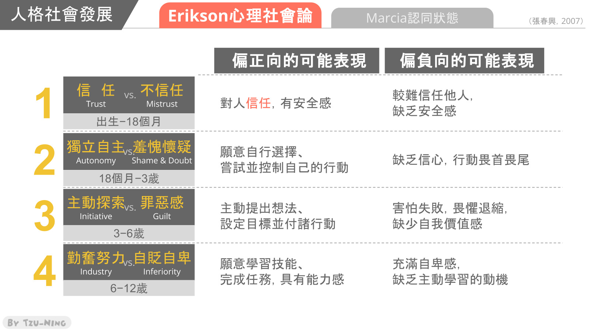
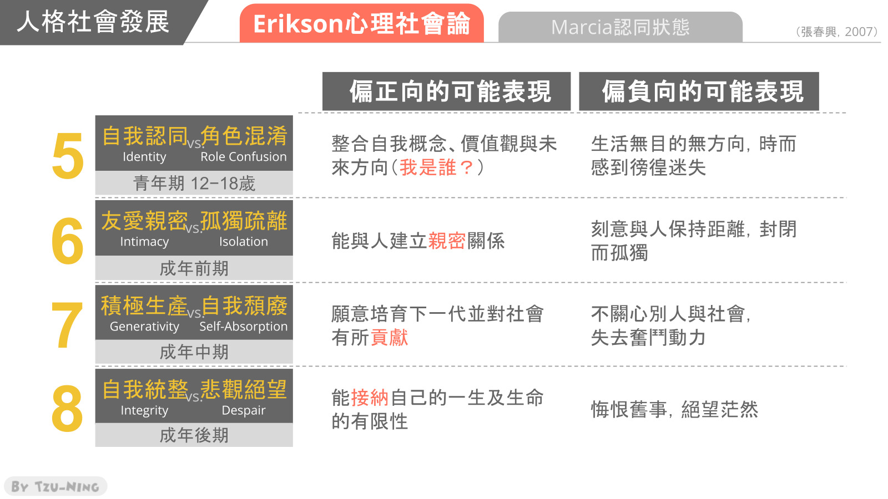
年齡可作為理解發展任務的參考，仍需回到個體實際面對的課題。不同發展課題可能同時存在，年齡無法單獨決定其發展狀態。
Erikson 理論的限制
理論提供了理解一生發展的架構，但不同課題可能同時存在，早期議題也可能再次浮現。例如大學生可能一面探索自我認同，一面學習建立親密關係，因此階段與年齡的界線需要彈性理解。
文化脈絡也會影響自主、認同、親密與社會責任的意義，應留意不同文化中的理解方式。研究上，各階段的界線、順序及危機解決程度，也不容易直接測量與驗證。
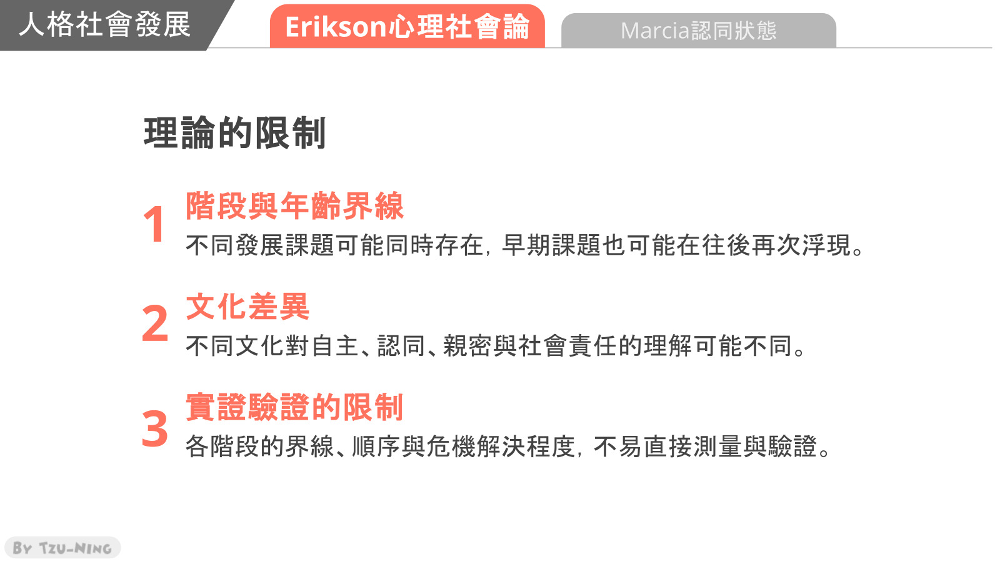
Marcia 的四種認同狀態
馬西亞（James Marcia）特別關注 Erikson 的第五個階段，對「自我認同」做了補充：認同並非只有「有」或「沒有」，而是可以分成四種認同狀態（identity statuses）。Marcia 的概念雖然簡單，卻是教師資格考試中經常出現的內容。
四種狀態的判斷，需同時看是否經過探索及是否形成承諾。例如接受家人安排、已有明確方向的學生，若尚未充分探索其他可能，較符合早閉型；同樣尚未決定未來，積極比較選項、尚未形成明確承諾者，較符合未定型認同（moratorium，又譯認同遲滯）；缺乏持續探索者則較符合迷失型。
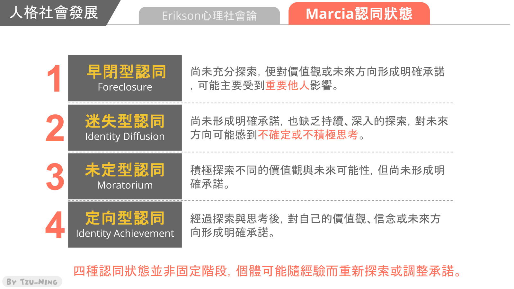
圖中的探索（exploration），有些書寫作「危機」，指是否曾思考與嘗試不同可能；承諾／投入（commitment）則是對價值觀、信念或未來方向形成投入。四種認同狀態並非固定階段，個體可能隨經驗重新探索或調整承諾。
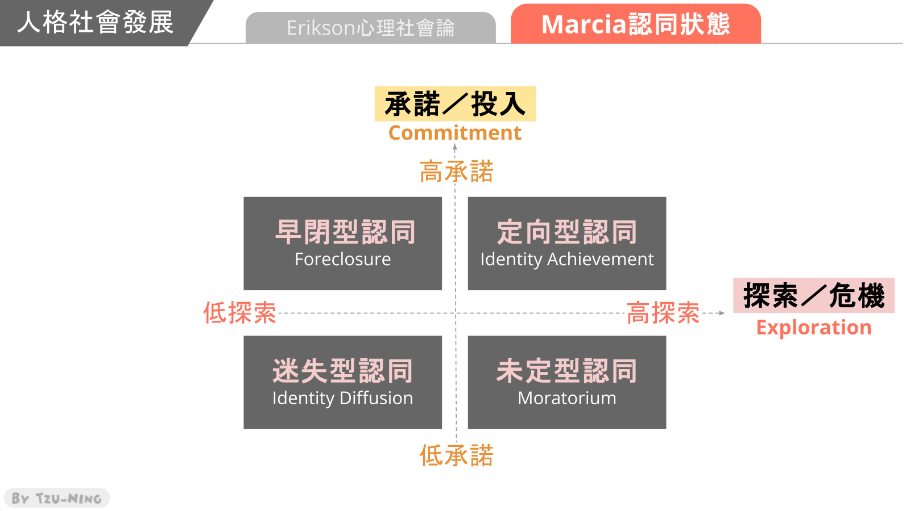
判斷未定型認同時，需要確認個體正在積極比較不同可能性，但尚未形成明確承諾。接受職業興趣測驗或與輔導教師討論，可以是探索的一部分；但不能只憑參加測驗、接受輔導，或尚未決定志願，就判定其認同狀態。若既缺乏持續探索，也尚未形成明確承諾，則較符合迷失型。
早閉型的關鍵，是未經充分探索便形成承諾；定向型則是在探索不同可能後，形成自己認可並願意投入的方向。即使最後選擇與父母期待相同，也可能是經過自主探索後的決定，因此不能只憑是否接受父母安排或模仿父母來分類。輔導時應了解學生如何做出選擇，以及這個方向是否符合自己的興趣與價值。
認同狀態也需要放在文化與生活脈絡中理解。在某些文化脈絡下，接受既有角色與價值也可能有助於適應；不能僅由認同狀態，推論個體的心理健康或適應好壞。
Piaget 的道德發展：從他律到自律
上次介紹過的 Piaget，是兒童道德發展研究的重要先驅。他在以臨床晤談研究兒童認知的過程中，發現兒童如何判斷對錯，與其認知發展密切相關。Piaget 探討兒童如何理解遊戲規則、行為意圖、責任與公平，認為兒童的認知發展，以及與成人、同儕的互動，都會影響其道德判斷。1932 年，他出版《兒童的道德判斷》（The Moral Judgment of the Child），書中設計許多問題和故事來詢問兒童，例如：
- 「玩彈珠的遊戲規則是從哪裡來的？可不可以修改？」年紀較小的兒童會說規則一旦定了就不能改；年紀較大的兒童則會說，只要一起玩的人都同意，規則就可以改。
- 「小明幫媽媽收拾碗筷時，不小心打破了三個碗；小華發脾氣，故意摔破一個碗；誰比較不乖呢？」年紀較小的兒童會說小明比較不乖，因為他打破的碗比較多；年紀較大的兒童則會注意到動機，認為故意摔破碗的小華比較不乖，小明是在幫忙，情有可原。
- 「大中到果園偷水果，園主來了，他急忙逃走，走過一座橋時，橋卻斷了。如果大中沒有偷水果，橋會不會斷？」年紀較小的兒童會認為，大中沒有偷水果，橋就不會斷，因為他做了壞事才被老天爺懲罰。
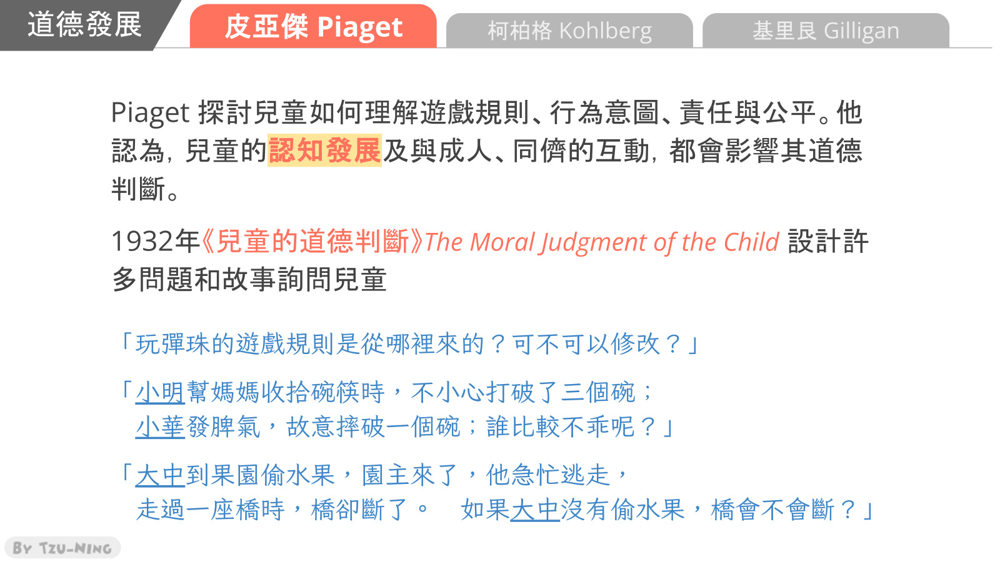
根據這些訪談，Piaget 認為兒童的道德發展是從他律道德到自律道德，分界大約在 10 歲左右。這種轉換並非一夕之間完成，而是逐漸由偏重他律轉為偏重自律。
他律道德
他律道德（heteronomous morality）又稱為道德實在論或約束道德。「他律」是指較依賴外在權威與固定規則來判斷對錯：兒童較容易把規則視為成人制定、不可任意更改。判斷過失時，可能較重視可見的結果而低估行為的意圖，例如認為打破三個碗的小明比較不乖；也可能相信違規會自動招致懲罰，例如認為偷水果的大中才會遇上斷橋。這種判斷傾向較重視行為結果，並可能低估意圖與情境；相信違規會自動招致懲罰，則稱為內在公正（immanent justice）。
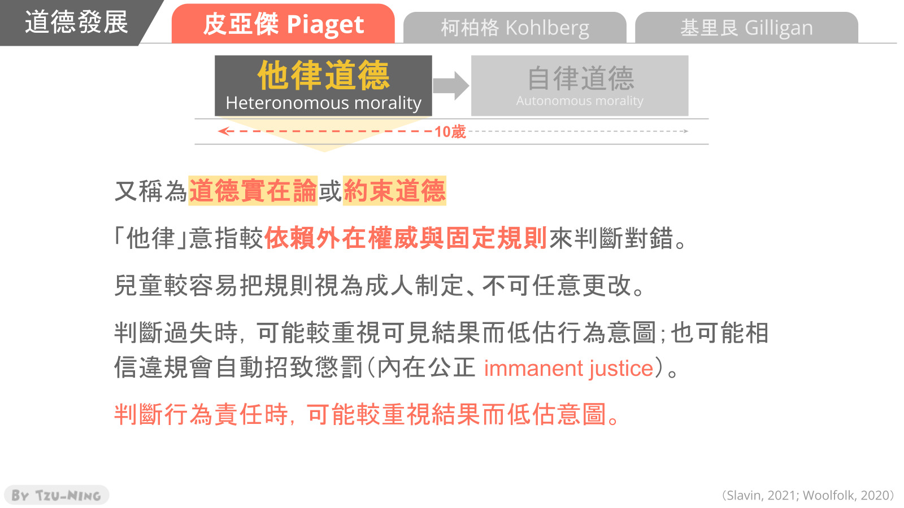
自律道德
到了自律道德（autonomous morality），隨著同儕合作與觀點取替增加，兒童逐漸理解規則是共同的約定，可以透過協議修改；判斷責任與公平時，也較能考量行為的意圖與情境。文獻上有很多研究支持，兒童的道德判斷是由著重結果進展到著重意圖。
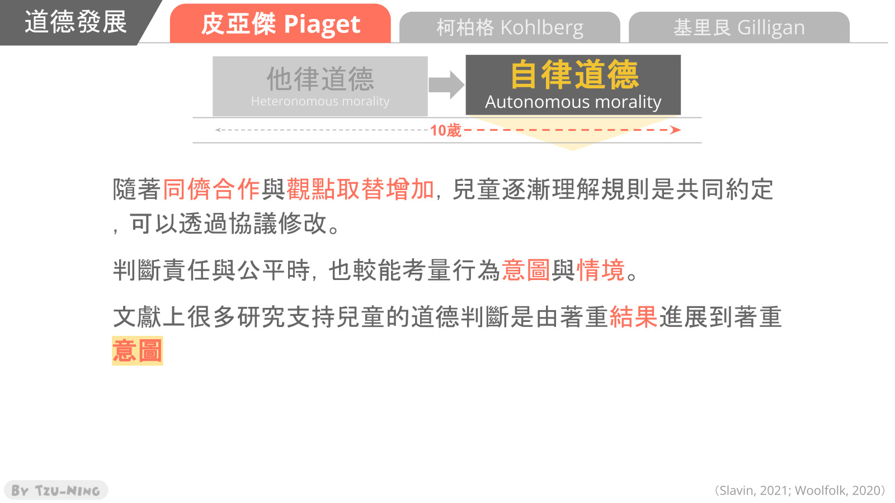
有些參考書會在他律之前再加上無律期（anomy）：約 4 歲以前的兒童尚無穩定的規則意識，「我想怎麼玩，就怎麼玩」。因此有時會看到「無律、他律、自律」三個階段的說法；Piaget 理論的主體則是從他律到自律。三者可以這樣對照：無律期「我想怎麼玩，就怎麼玩」；他律期服從權威與規則，「老師說不可以，就是不可以」；自律期理解規則、意圖與公平，「他不是故意的，不能只看結果」。
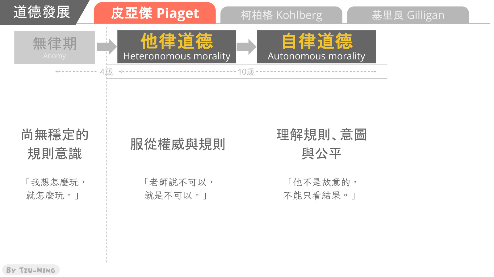
Kohlberg 其人與道德兩難情境
談道德發展，最主要的學者是柯柏格（Lawrence Kohlberg，1927–1987）。他是美國心理學家，曾任教於芝加哥大學心理學系與哈佛大學教育研究所。他之所以重視道德發展，與他年輕時的經歷有關。
Kohlberg 高中畢業後沒有直接上大學，而是上了一艘偷運猶太難民前往巴勒斯坦的船擔任船員。當時英國封鎖了巴勒斯坦的海岸，船在將抵達時被攔截，年約十九歲的 Kohlberg 被送往賽普勒斯的拘留營。他在那裡目睹猶太難民的處境，不斷思考：為什麼有人會對與自己毫無關係的人做出如此殘忍的事？又為什麼在大家都挨餓、生活如此困苦的情況下，仍有人願意把食物分給別人？他自己違反封鎖、觸犯法令去幫助別人，這樣做究竟對不對？這些經歷開啟了他日後對「什麼是對、什麼是錯」的研究。
回到美國後，Kohlberg 只用一年就讀完大學。求學期間讀到 Piaget 的道德發展研究，他深感興趣，也想訪談兒童，但他使用的不是 Piaget 的故事，而是自己設計的道德兩難情境（moral dilemmas），並以此完成博士論文，提出道德發展的分期。他的研究主力在道德推理，是將 25 年前 Piaget 對兒童道德發展的詮釋加以延伸。1971 年，他在中美洲的貝里斯進行跨文化研究時感染熱帶寄生蟲病，此後長年與疾病和憂鬱奮戰；1987 年，59 歲的他離開醫院後失蹤，數月後才被尋獲遺體，據信是結束了自己的生命。
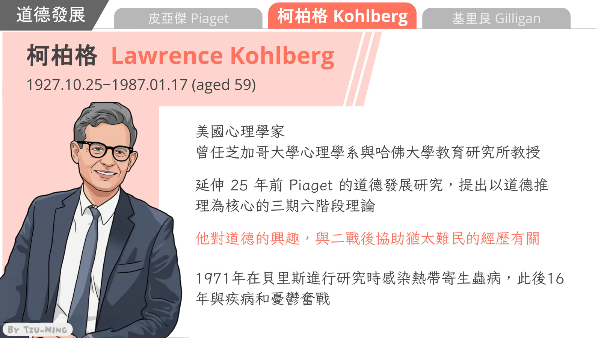
理論要點
- Kohlberg 關注的是個體面對道德兩難問題情境時的推理理由。
- 道德判斷並不單純是一個是非對錯的問題，而是在面對道德問題情境時，個人從人、己、利、害以及社會規範等多方面綜合考量所做的價值判斷。
- 三期六段描述的是道德推理的架構；不能只由年齡或最後的選擇，判定一個人所處的階段。
- 推理階段不直接等同實際的道德行為。
- 接觸不同或較成熟的道德觀點，可能引發認知衝突與觀點取替，促進道德推理發展。
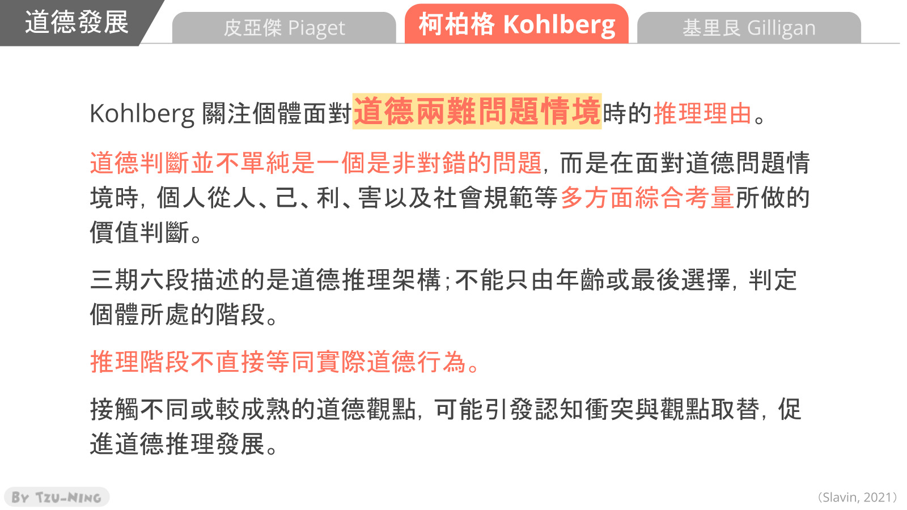
海因茲偷藥救妻
Kohlberg 最有名的道德兩難情境是海因茲兩難（Heinz dilemma），中文也有「漢斯偷藥」「張先生偷藥」等譯法。
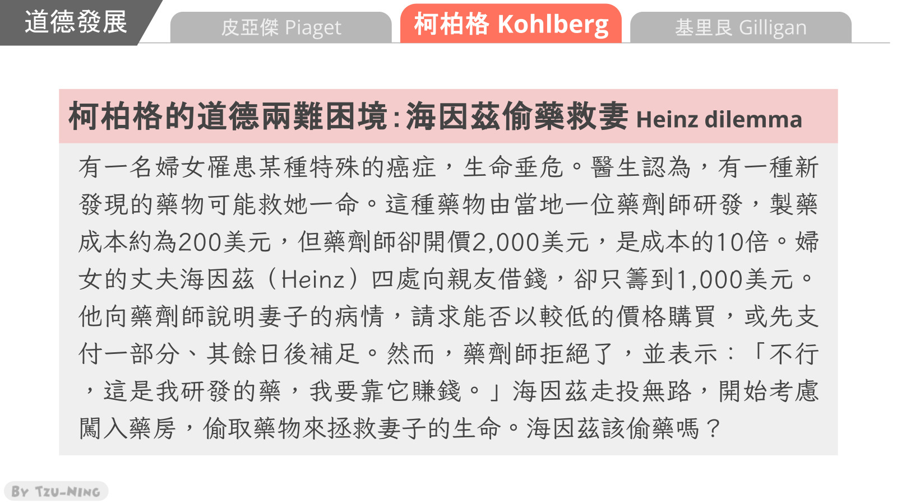
海因茲兩難的判斷線索在於回答背後的理由。相同的選擇可能出於不同考量，也可能有人同時顧及生命與社會秩序，需要進一步了解其推理。不能只由「該偷」或「不該偷」的結論，判定一個人所處的階段。
Kohlberg 的三期六段論
Kohlberg 將道德發展分為三個時期，每個時期下再分兩個階段，共三期六段；因此他的理論屬於階段論（不連續論）。三個時期的名稱可以從中間記起：中間的習俗道德期（conventional）與規則、秩序有關；在它之前的是前習俗道德期（preconventional），之後的是後習俗道德期（postconventional）。
前習俗道德期以自己為判斷的中心。第一階段避罰服從取向為避免懲罰而服從權威或規則，行為的好壞取決於會帶來什麼後果；第二階段相對功利取向以自身的需求或利益為首要考量，也可能進行互惠交換，例如「這次考試我借你看，下次你也要借我看」。
習俗道德期開始在意他人與社會的規範。第三階段尋求認可取向又稱乖男巧女取向（good boy／good girl），重視重要他人的認可，希望別人覺得自己是好孩子；第四階段法律秩序取向（社會秩序取向）重視履行義務、遵守法律，即使認為某條法律不好，在修改之前仍應遵守。
後習俗道德期則能從更高的層次看待規範。第五階段社會契約取向理解法律與制度是共同的約定，並重視個人權利與公共利益，只要社會有共識，法律也可以修改；第六階段普遍倫理取向依據良心與可普遍適用的倫理原則進行判斷，不過這個階段的實證地位仍有爭議。
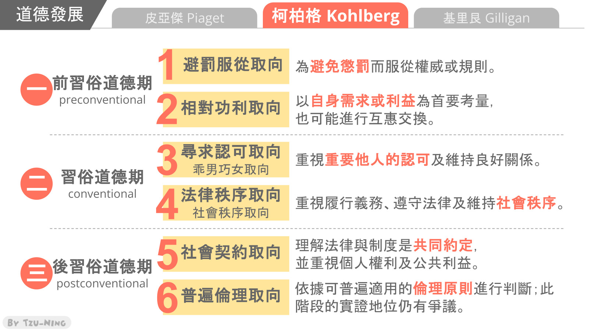
道德推理會隨認知發展、教育與社會經驗而改變，但年齡不能單獨用來判定階段。進入成年，也不代表一定達到後習俗層次；判斷時仍須了解個體如何說明自己的理由。Kohlberg 的理論並不是說階段越高的人越善良，它分類的是一個人如何進行道德推理。
以海因茲兩難練習判斷
課堂以海因茲兩難的七種回答練習判斷取向。判斷的線索都在理由裡：「偷藥會被抓、會受罰」是避罰服從；「救回妻子後，兩人還能彼此照顧」看的是利大於弊，屬於相對功利；「否則親友會覺得他不是好丈夫」與「大家都認為好人不該偷東西」都在乎別人怎麼看，屬於尋求認可；「若人人都因個人理由違法，社會秩序將難以維持」是法律秩序；「救人符合保障生命的社會共識，不合宜的法律可以修改」是社會契約；「依可普遍適用的正義原則，考量生命與每個人的尊嚴」則是普遍倫理。
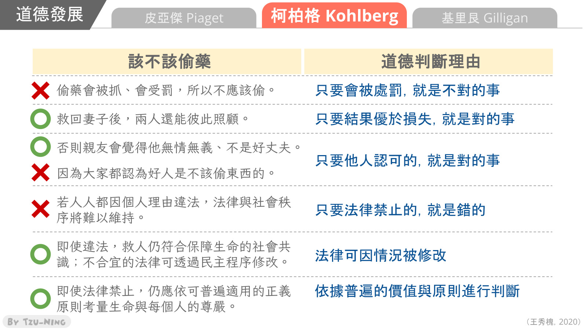
其中尋求認可的兩個回答特別值得留意：一位認為應該偷、一位認為不應該偷，但理由都是希望得到別人的認可，因此都屬於尋求認可取向。外在的行為選擇看似相反，背後的理由卻可能來自同一個取向；判斷時要看理由，而不是看結論。
課堂例子可協助辨認推理所重視的依據：因怕受罰而守規則，涉及避罰服從；為推甄加分而服務，涉及相對功利；在意他人是否認為自己有愛心，涉及尋求認可。至於較高階段的推理，仍需看其如何運用權利、公共利益或可普遍適用的倫理原則，單憑「依良心」一詞還不足以判定。
Gilligan：關懷倫理與道德
基里艮（Carol Gilligan，1936–）關注 Kohlberg 早期建立理論的核心研究以男孩為主，女性的經驗與關係脈絡可能未被充分呈現。她透過訪談面臨是否終止妊娠抉擇的女性，探討真實處境中的關係、責任與照顧，相關論述見《不同的聲音》（In a Different Voice，1982）。
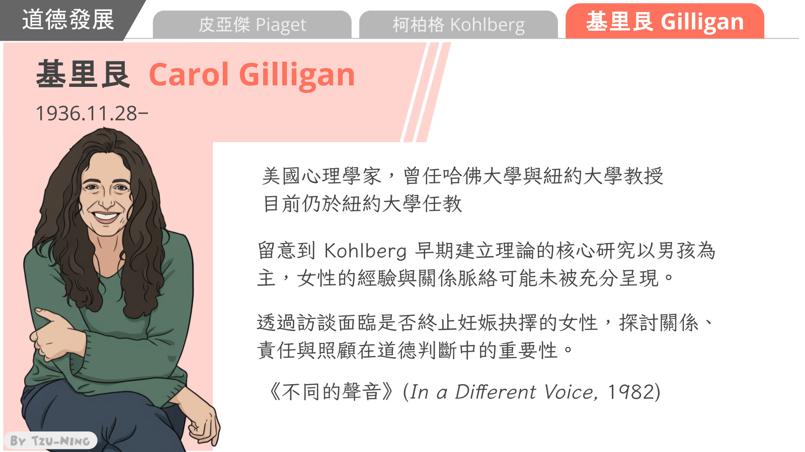
關懷倫理（ethics of care）使道德判斷的討論納入關係中的責任，以及對自己與他人需要的照顧。正義與關懷取向並非男性或女性所專屬。因此，不能因一個人的性別，就預設其道德判斷方式。
三個層次呈現關注範圍的轉變：從自身生存，轉向為他人犧牲，再到同時重視自己與他人的需要。理解「均等不傷害」時，重點在於將自己也納入照顧的考量，並思考如何減少對各方的傷害。
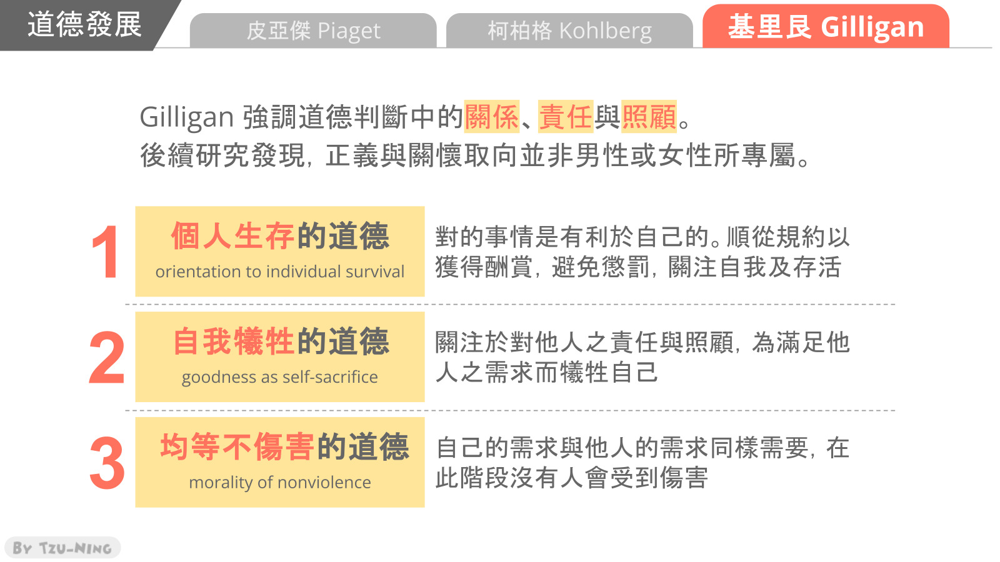
學前階段：同儕、利社會行為與遊戲
最後依學前、小學、中學三個階段，整理社會情緒的發展。每個階段都可以先對照 Erikson 的心理社會階段：學前階段（幼兒園）的主要任務是遊戲，透過遊戲探索世界，對應的是第三期「主動探索 vs. 罪惡感」。
同儕互動中的衝突，讓兒童有機會發現彼此的感覺與觀點不同，並練習觀點取替。利社會行為則涉及自願照顧、分享、安慰與合作；成人可說明行為對他人的影響，提出攻擊以外的替代方式，並具體肯定兒童的照顧行動，幫助其理解正向影響。
遊戲提供練習語言、想像、問題解決、情緒調節與社會互動的機會。支持性的親子互動，與兒童較良好的社會互動及衝突解決能力有關。
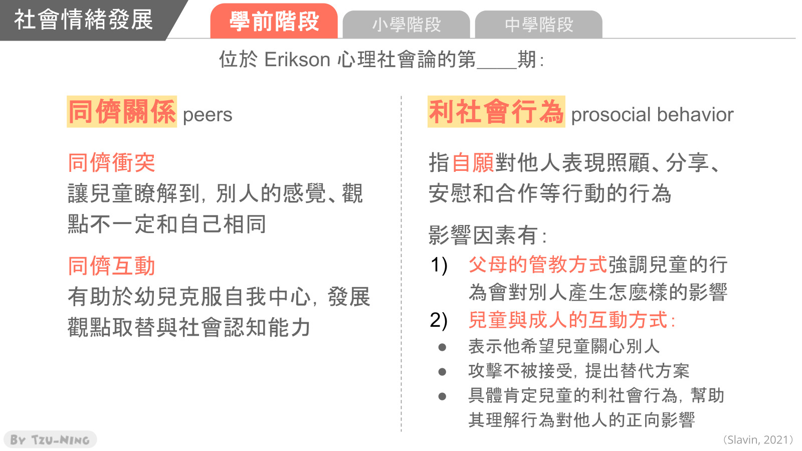
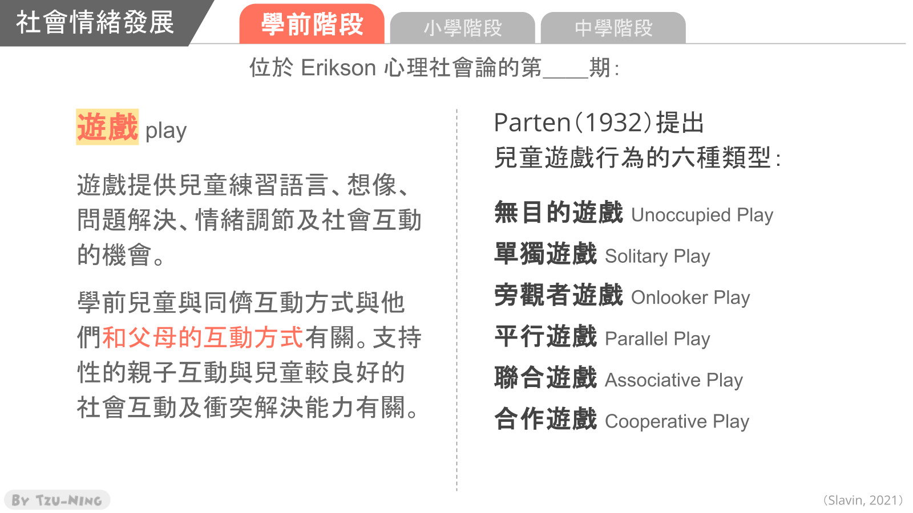
Parten 的六種遊戲類型
Parten（1932）依兒童在遊戲中的社會參與方式，區分六種型態。她的研究發現，較年長幼兒較常參與聯合與合作遊戲，呈現社會參與及活動組織程度逐漸增加的趨勢。這些型態可以在同一名兒童、不同活動與不同情境中出現，不能直接視為依固定年齡逐一完成的發展階段。
無目的遊戲（unoccupied play）指兒童暫時沒有投入特定遊戲，可能四處張望、注意周遭事物，或活動自己的身體；不宜將它限定為出生後幾個月的行為。單獨遊戲（solitary play）則是專注於自己的遊戲，沒有與旁邊的兒童共同遊玩；觀察時應區分是否投入自己的活動，以及是否參與他人的活動。
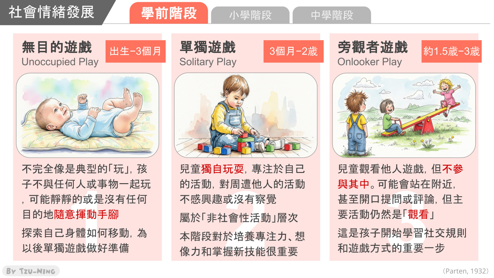
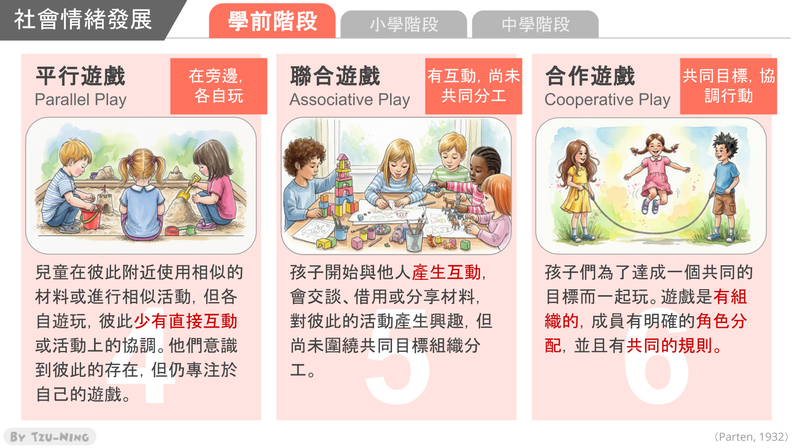
較容易混淆的是旁觀者、平行與聯合遊戲。在公園裡站在旁邊一直看別人玩、可能會發問但沒有要加入的，是旁觀者遊戲；在沙坑裡各自拿著自己的鏟子挖沙、知道旁邊有人但各玩各的，是平行遊戲；向旁邊的孩子借盤子、借彩色筆，彼此有互動，但尚未圍繞共同目標組織分工，是聯合遊戲；一起玩扮家家酒，有人當老闆、有人當客人，有角色、有規則，則是合作遊戲。
觀察遊戲時，應以實際參與方式為準，不以單一型態作為固定分期或發展判定標準。兒童會依活動與情境在不同型態之間轉換，已會合作遊戲的兒童也可能選擇單獨遊戲；不能單憑一次遊戲型態，判定兒童整體的成熟程度或社交能力。
小學階段：自我概念、自尊與同儕接納
小學階段對應 Erikson 的第四期「勤奮努力 vs. 自貶自卑」。因為有了社會比較，這個階段特別需要了解以下幾個概念。
自我概念與自尊
自我概念（self-concept）是個體對自身特質、能力、興趣與社會角色等所形成的認識與信念，其中可以包含描述，也可以包含評價。例如「我喜歡與人合作」「我的語文能力不錯，但數學比較吃力」，都屬於對自己的認識；後一句雖然包含能力評價，仍然是自我概念的一部分。
自尊（self-esteem）著重對自身價值的評價與感受，涉及如何肯定、接納與尊重自己。若談的是整體自尊，關心的是個體如何看待自己整體的價值，而不只是某一項能力的表現。
例如，同樣認為「我的數學不太擅長」，有人仍能覺得自己有值得肯定的地方，也值得被尊重；有人卻進一步認為「所以我整個人都很差、沒有價值」。兩者對數學能力的認識可能相近，對整體自我價值的感受卻不同。
自我概念與自尊密切相關，也有重疊，不能單靠「有沒有評價」來區分。某一項能力的表現，也不等同於一個人整體的價值。
隨著兒童逐漸成長，描述自己時會更能納入內在特質，例如聰明、善良，也逐漸能分別看待自己在不同領域的能力與表現。
社會比較（social comparison）提供理解自身能力與表現的訊息。學業表現與學業自我概念可能相互影響：長期挫敗可能削弱能力評價，較低的學業自我概念也可能影響後續學習。重要他人的支持與接納，有助於形成較正向的自我評價。
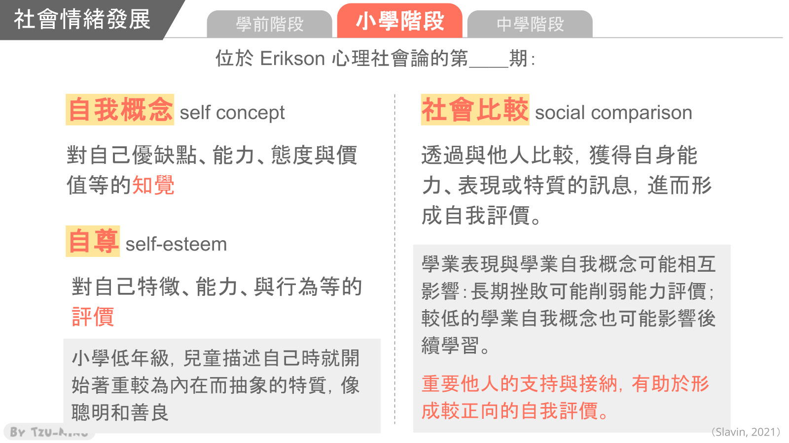
同儕關係與同儕接納
小學階段同儕的重要性逐漸增加。兒童會將自己的能力和技能與他人做比較；同儕團體的成員也彼此教導不同的世界，兒童透過態度和價值的分享，選擇並形成自己的態度與價值。隨著成長，同儕的影響逐漸增加，朋友也成為重要的支持來源。父母仍可能提供重要支持，不同關係的重要性會因年齡、關係品質與面對的問題而有所差異。
同儕拒絕與後續學業、行為及情緒適應困難有關，可視為風險指標。被拒絕的兒童可能表現出攻擊、退縮或焦慮等不同特徵，但個別差異很大。理解這些關聯有助於留意支持需求，不能據此認定某個學生必然出現適應困難。
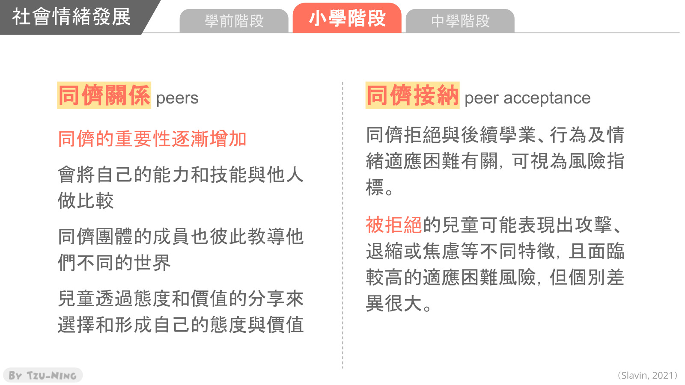
社交計量法
研究上可以用社交計量法（sociometric methods）了解同儕接納的情形，也就是讓全班同學進行同儕提名，例如：「班上哪三個同學是你最喜歡和他在一起的？」「班上哪三個同學是你最不喜歡和他在一起的？」同儕提名需要辨識被提名的對象；是否記錄提名者，則取決於研究目的與設計。資料的蒐集、保存與解讀，都需要注意保密及對學生可能造成的影響。以下依正向與負向提名，簡化說明五種分類；實際分類須依採用的計分與分類標準進行：
- 受歡迎型（popular）：很多人喜歡、很少人不喜歡。
- 被拒絕型（rejected）：很多人不喜歡、很少人喜歡。
- 爭議型（controversial）：很多人喜歡，也很多人不喜歡。
- 被忽略型（neglected）：較少獲得正向與負向提名，表示在這次提名中較少成為同儕注意的焦點。
- 普通型（average）：介於中間。
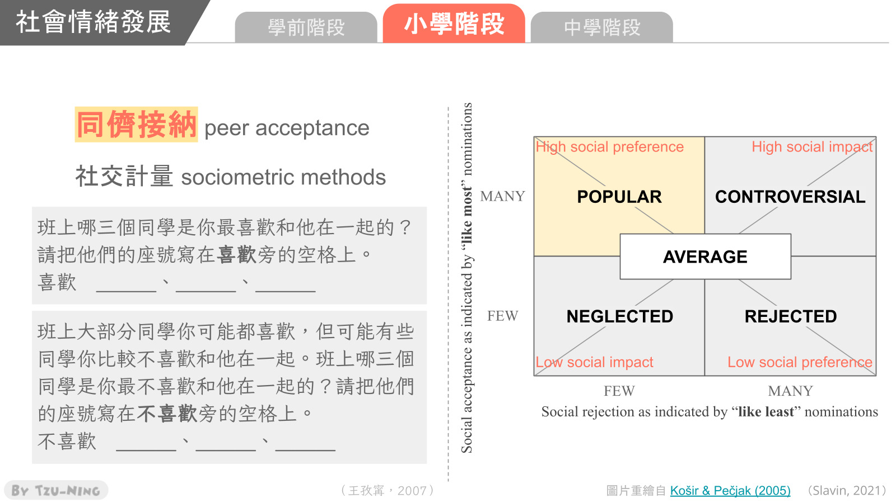
需要特別提醒：社交計量是研究上使用的方法，可用來分出不同類群、進行統計分析，但不建議一般教師自行運用於班級經營，以免因不當使用而造成學生標籤化及人際傷害；更不應讓學生知道自己被歸為哪一類。若要協助班上被拒絕的學生，應採用其他方式。
中學階段：自我認同、自尊與社會關係
中學階段對應 Erikson 的第五期「自我認同 vs. 角色混淆」，最重要的議題就是自我認同。
自我認同的發展
隨著思考不同可能性的能力發展，青少年逐漸能反思自己的特質、價值觀與未來方向。反思性（reflectivity）是對自己的內心活動加以思考與分析的傾向；青少年透過自我反思與社會比較，探索「我是誰、我到底是怎樣的一個人」，也逐漸理解自己與他人可能有不同的想法、感受與價值觀。
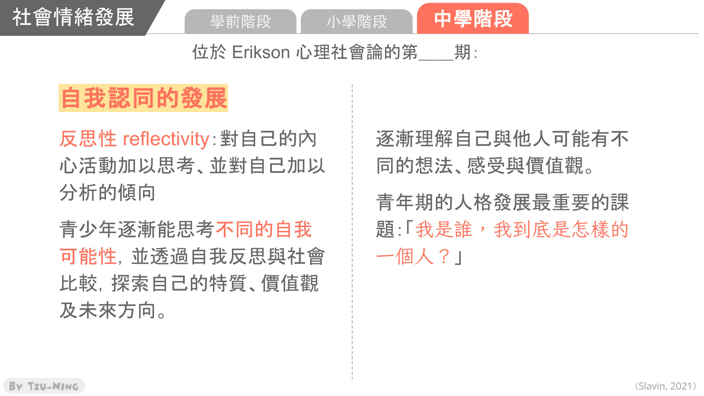
自我概念、自尊與情緒發展
部分青少年在青春期初期可能出現自尊下降，但個別差異大。早熟對女生的自尊較不利；男生方面，過去常認為早熟較有利，但近年研究結果並不一致。投影片也提醒，身體外表與同儕接納是理解青少年自我價值感的重要面向。
從小學轉到國中、再到高中，青少年會感受到相當大的壓力，情緒與恐懼也是這個時期的重要課題。前青年期的青少年需要成人的幫助，以了解情緒和恐懼是成長過程中很自然的一部分；即使成人認為這些情緒和恐懼不切實際，也必須讓青少年有機會討論。
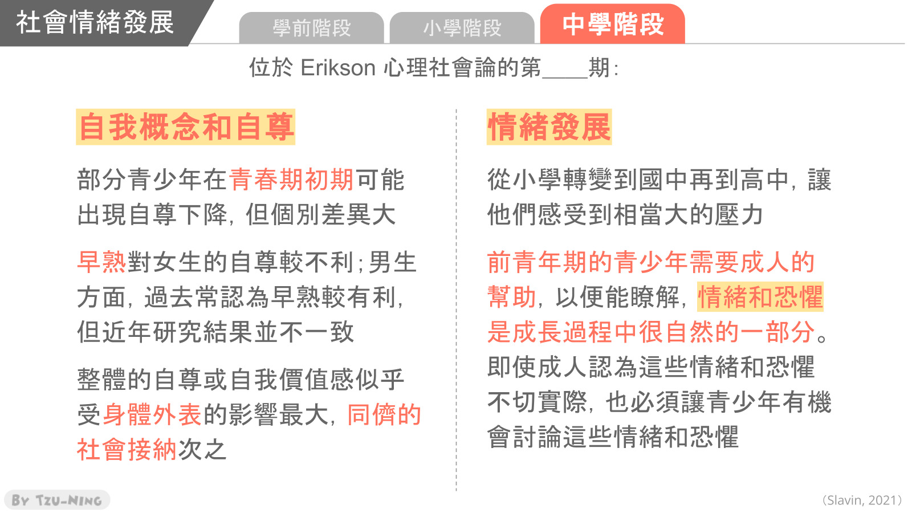
社會關係
隨著年齡增長，同儕逐漸成為重要的社會支持來源。Furman 與 Buhrmester（1992）比較不同年級受試者對人際支持的知覺：在該研究樣本中，四年級受試者評定父母提供的支持最多；七年級時，同性別朋友與父母提供的支持相近；十年級時，則以同性別朋友的支持最突出。這是不同年級樣本的比較，不能視為每個人都會依序經歷的固定歷程，也不表示朋友會取代父母的支持。
家庭與朋友可以同時是重要的支持來源，其重要性也會隨關係品質、問題性質與生活情境而改變。青年期對小團體的忠誠雖然常見，但未必長期或穩定；同儕接納與衝突解決、利社會行為及學業適應等面向有關，被拒絕者可能面臨較高的適應風險。
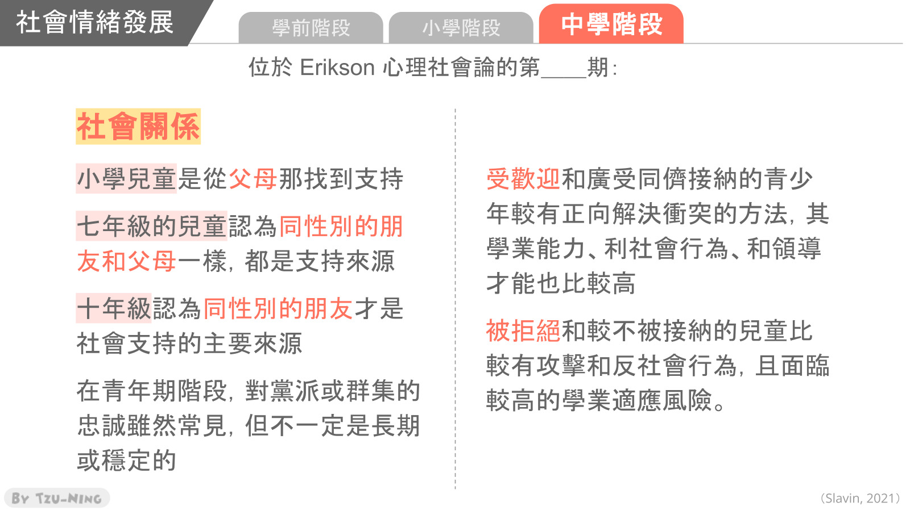
本次重點整理
- Bronfenbrenner 重視生態效度，提出生態系統理論：微系統、中介系統、外系統、大系統，以及後來補充的時間系統；各系統相互依存。
- Erikson 的心理社會發展論將一生分為八個階段，每個階段都有待處理的心理社會危機，重點是整合正負傾向，形成以正向特質為適當優勢的動態平衡。
- Erikson 八階段：信任、獨立自主、主動探索、勤奮努力、自我認同、友愛親密、積極生產、自我統整（對應的負向端依序為不信任、羞愧懷疑、罪惡感、自貶自卑、角色混淆、孤獨疏離、自我頹廢、悲觀絕望）。
- Erikson 理論的限制：實際上可能同時面對多個危機；不同文化對發展課題的理解可能不同；各階段的界線與固定順序不易完整驗證。
- Marcia 以探索與承諾兩個向度區分四種認同狀態：早閉型（低探索、高承諾）、迷失型（低探索、低承諾）、未定型（高探索、低承諾）、定向型（高探索、高承諾）；狀態可能隨經驗而調整。
- Piaget 的道德發展：從他律道德（較重結果、依賴外在權威與固定規則）到自律道德（重意圖、規則可經同意而修改），分界約在 10 歲。
- Kohlberg 以道德兩難情境研究道德推理，提出三期六段：前習俗（避罰服從、相對功利）、習俗（尋求認可、法律秩序）、後習俗（社會契約、普遍倫理）；判斷階段要看理由，不是看結論。
- Gilligan 強調關係、責任與照顧，提出個人生存、自我犧牲、均等不傷害三個層次；正義與關懷取向並非男性或女性所專屬。
- 學前階段重視同儕關係、利社會行為與遊戲；Parten 依社會參與方式區分無目的、單獨、旁觀者、平行、聯合、合作六種型態，不能視為依固定年齡逐一完成的發展階段。
- 小學階段重視自我概念、自尊、社會比較與同儕接納；自我概念包含對自身的認識與信念，也可以包含評價，自尊則著重自身價值的評價與感受，兩者不能只憑有無評價來區分；社交計量法可用於研究，但不建議一般教師自行運用於班級經營，以免因不當使用而造成學生標籤化及人際傷害。
- 中學階段的核心是自我認同；部分青少年在青春期初期可能出現自尊下降，但個別差異大；同儕逐漸成為重要支持來源，家庭與朋友的支持可以並存。
資料來源
- 王孜𡩋，〈社會與道德發展〉課堂講授，2026 年 10 月 22 日。
- 王孜𡩋，〈社會與道德發展〉課堂投影片，國立臺灣師範大學師資培育學院。文中圖片皆取自此投影片，依 2026 年 11 月 5 日擷取的版本更新。
- 投影片標註的主要文獻：Erikson (1950)；Košir & Pečjak (2005)；Parten (1932)；Slavin (2021)；Woolfolk (2020, 2025)；王秀槐 (2020)；王孜𡩋 (2007)；張春興 (2007)。
以下文獻用於本次定義、判斷方式與研究解讀的文字校訂，與投影片標註的來源分列：
- Bronfenbrenner, U. (1994). Ecological models of human development. In International Encyclopedia of Education (2nd ed., Vol. 3, pp. 1643–1647). Elsevier.（生態系統的定義）
- Shavelson, R. J., Hubner, J. J., & Stanton, G. C. (1976). Self-concept: Validation of construct interpretations. Review of Educational Research, 46(3), 407–441. DOI: 10.3102/00346543046003407.（自我概念的描述與評價面向）
- American Psychological Association. APA Dictionary of Psychology: Self-concept; Self-esteem.（自我概念與自尊的定義）
- Marcia, J. E. (1966). Development and validation of ego-identity status. Journal of Personality and Social Psychology, 3(5), 551–558.（探索、承諾與認同狀態）
- Colby, A., Kohlberg, L., Gibbs, J., & Lieberman, M. (1983). A longitudinal study of moral judgment. Monographs of the Society for Research in Child Development, 48(1–2), 1–124.（道德推理與年齡的關係）
- Parten, M. B. (1932). Social participation among pre-school children. Journal of Abnormal and Social Psychology, 27(3), 243–269.（遊戲中的社會參與方式）
- Coie, J. D., Dodge, K. A., & Coppotelli, H. (1982). Dimensions and types of social status: A cross-age perspective. Developmental Psychology, 18(4), 557–570.（同儕地位的計分與分類）
- Furman, W., & Buhrmester, D. (1992). Age and sex differences in perceptions of networks of personal relationships. Child Development, 63(1), 103–115.（不同年級樣本的支持來源比較）